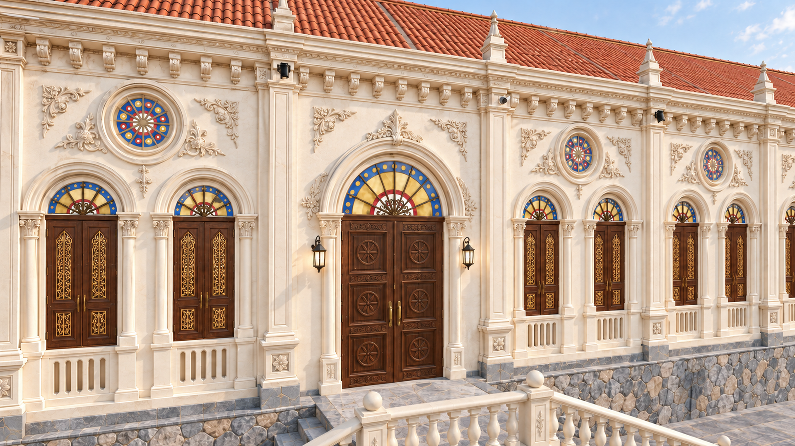
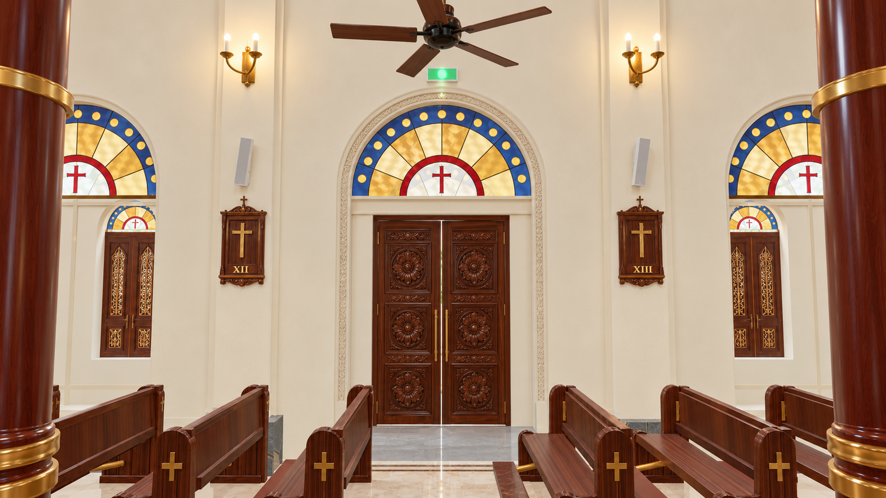
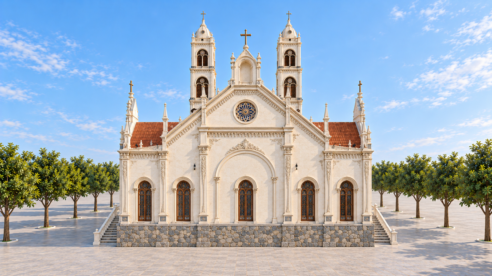
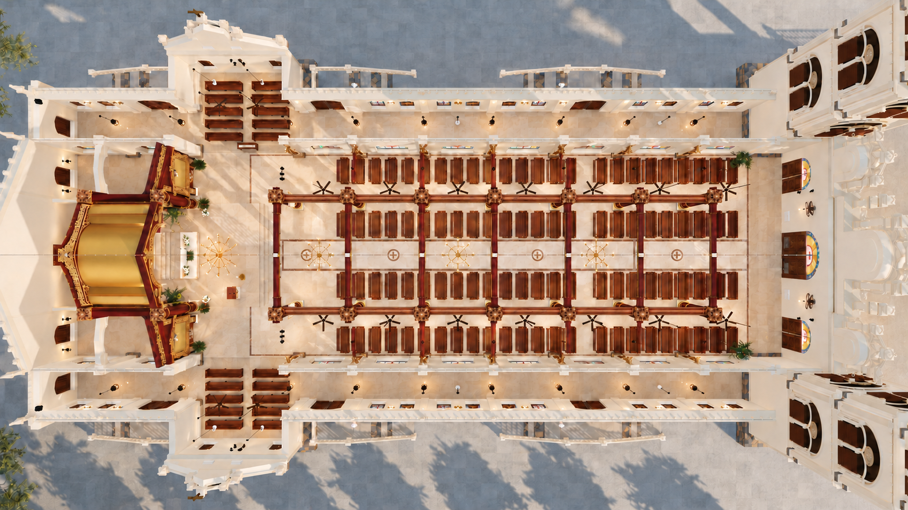
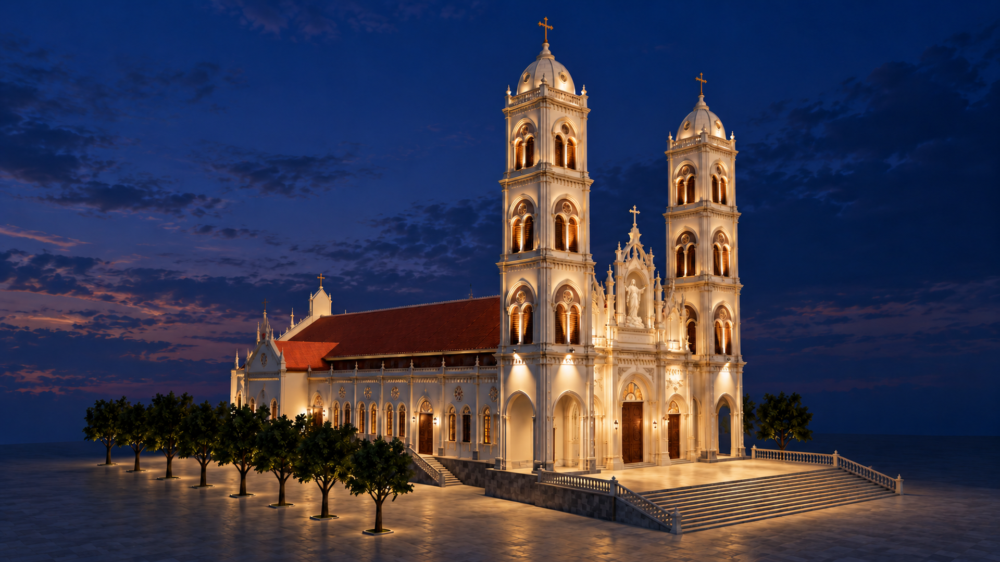
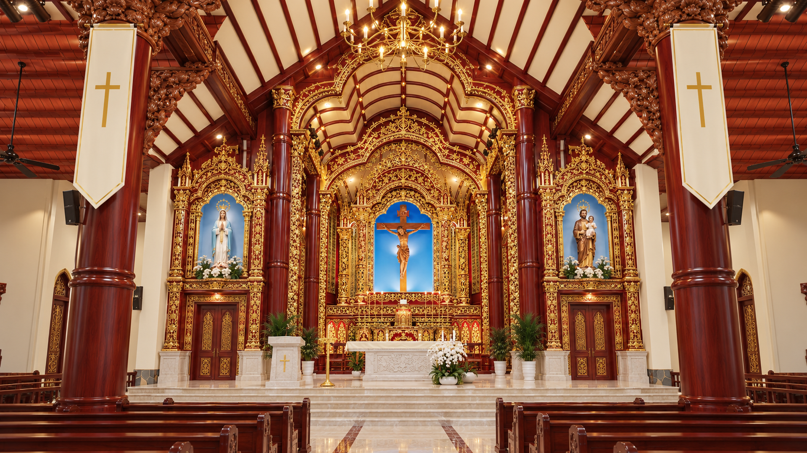
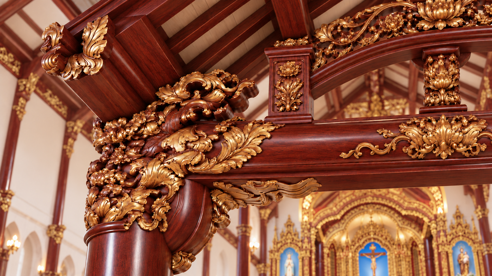

Side entrance · exterior close view
Carved timber side doors, stained-glass fanlight, ivory arch mouldings, wall relief and stone landing. Side shutters use the owner-preferred solid carved timber and gilded panels from the interior view.
7 October 2026 · generated concept · resampled Full HDFull HD PNG · Native original

Side entrance · interior wall detail
Interior side-door arch, stained glass, devotional panels, wall sconces and nearby lacquered columns.
7 October 2026 · generated concept · resampled Full HDFull HD PNG · Native original

Side wall · windows and decoration
Close view of the paired timber shutters, coloured fanlights, circular rose windows, pilasters and ornamental cornice. Side shutters use the owner-preferred solid carved timber and gilded panels from the interior view.
7 October 2026 · generated concept · resampled Full HDFull HD PNG · Native original

Rear elevation · daylight
Straight view of the sanctuary-end exterior, five rear windows, central gable and continuous stone base.
7 October 2026 · generated concept · resampled Full HDFull HD PNG · Native original

Rear and long side · evening
Oblique rear view showing the sanctuary-end wall, projecting wing, side entrances and distant front towers. Side shutters use the owner-preferred solid carved timber and gilded panels from the interior view.
7 October 2026 · generated concept · resampled Full HDFull HD PNG · Native original

Top-down · roof and site
Overhead roof view showing both front towers, projecting wings, roof intersections, side stairs and two tree rows.
7 October 2026 · generated concept · resampled Full HDFull HD PNG · Native original

Top-down · interior cutaway
Roof-hidden overhead concept showing the nave, four pew blocks, two central column rows, sanctuary and side wings. Two B03 longitudinal nave-row beams are shown as proposed connections from the structural art reference.
7 October 2026 · generated concept · resampled Full HDFull HD PNG · Native original

Front elevation · daylight
Twin towers and the Assumption of the Blessed Virgin Mary in the central facade niche.
7 October 2026 · generated concept · resampled Full HDFull HD PNG · Native original

Front and long side · daylight
Elevated oblique view showing the facade, Assumption statue, long side and terracotta roofs.
7 October 2026 · generated concept · resampled Full HDFull HD PNG · Native original

Main entrance · close view
Closer oblique view of the three timber entrances, stone stage and Marian niche.
7 October 2026 · generated concept · resampled Full HDFull HD PNG · Native original

Opposite front and side · evening
Opposite oblique view with warm facade accents and the Assumption statue at blue hour.
7 October 2026 · generated concept · resampled Full HDFull HD PNG · Native original

Nave toward sanctuary · daylight
Long central aisle, timber columns and carved beam heads, with the approved sanctuary concept at the far end.
7 October 2026 · generated concept · resampled Full HDFull HD PNG · Native original

Sanctuary overview · evening
Central Crucifix in its blue recess, Our Lady and Saint Joseph with Child, red lacquer and gilded carving.
7 October 2026 · generated concept · resampled Full HDFull HD PNG · Native original

Side aisle toward sanctuary · daylight
Eye-level side view combining the modeled aisle arrangement with the approved sanctuary and column-head art.
7 October 2026 · generated concept · resampled Full HDFull HD PNG · Native original

Sanctuary carving and altar · close view
Oblique close view of the Crucifix niche, layered gilded relief, lacquered chamber and pale stone altar.
7 October 2026 · generated concept · resampled Full HDFull HD PNG · Native original

Carved column and beam connection · close view
Decorative study of carved haunches, column head, connected beams and upper rail. Concealed joinery is not specified.
7 October 2026 · generated concept · resampled Full HDFull HD PNG · Native original
Only the approved sanctuary concept, original sanctuary photograph and retained stair-detail input remain below. Older timber studies and original timber photos are used by the engineering reference package; superseded gallery images are removed from the numbered folders.
For each part, add a flat view, three-quarter angle, joint close-up and underside or reverse view. Pending entries below are a shot list, not completed deliverables.
The five original timber photographs, eight timber study illustrations and their native masters are preserved in the engineering reference package. The current numbered reference folders contain the new church views and the few sources still used here.